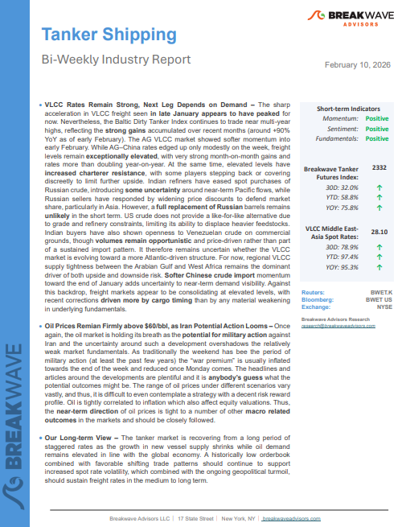
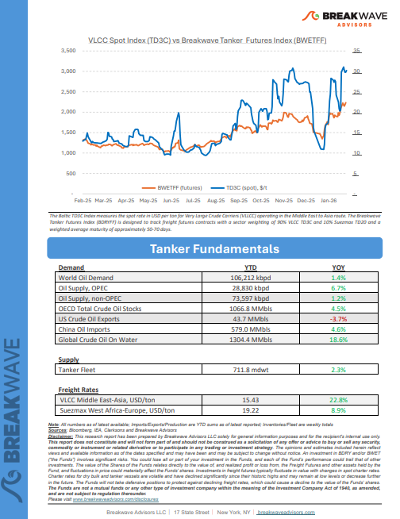

Welcome toBreakwave AdvisorsWeekend Read
As the week comes to a close, take a moment to review the key insights from the past few days. Missed something? We've gathered all the top insights for you to catch up at your convenience.
Breakwave Shipping Report
VLCC Rates Remain Strong, Next Leg Depends on Demand– The sharp acceleration in VLCC freight seenin late January appears to have peakedfor now.


Insights Of The Week
Global soybean exports
The Panamax market enters February shaped by two contrasting cargo narratives.
Doric Weekly Market Insights
Reassessing Russian Supply

Last week, President Trump announced that the United States and India had agreed a trade deal.
Gibson Tanker Market Report
BDI vs BCI Ahead of the Lunar New Year
The Baltic Dry Index (BDI) recorded a sharp recovery ahead of the Lunar New Year before correcting on Friday, 6 February 2026.
Signal Ocean Market Insights
Yet more compliant tankers could go dark after EU bans maritime services for Russia crude trades
Braemar Research
Tanker newbuilding activity
The renewed acceleration in tanker newbuilding activity has once again brought the question of oversupply to the forefront of market discussions, particularly as deliveries are set to rise sharply over the next two years.
Xclusiv Shipbrokers Weekly Report
Libya’s oil sector
Libya’s oil sector is gaining renewed momentum in 2026, following a series of strategic developments that took place recently at the Libya Energy & Economic Summit (LEES).
Intermodal Weekly Market Report
Coal and the Freight Market: Policy Direction vs Market Reality

This week’s Allied QuantumSea Research reviews one of the key challenges facing the dry bulk freight market: the growing gap between long-term energy transition objectives and the current realities of fleet supply and commodity dependence.
Allied Weekly Report
LatAm crude exports face temporary slowdown
LatAm crude exports are facing a temporary slowdown in early-2026 but we expect a rebound going forward which we explore in this insight piece.
Vortexa Freight Weekly
Guinean miner to lower the long-term contract price
On January 29, a major Guinean miner reportedly lowered its 1Q26 bauxite long-term contract price from $66/mt to $62/mt.
BRS Weekly Dry Bulk Newsletter
Tech selloff weighs on risk sentiment
A risk-off tone across markets weighed on commodity markets. Precious and industrial metals led the sell-off. Oil was also lower on lower geopolitical tensions.
Commodities Wrap